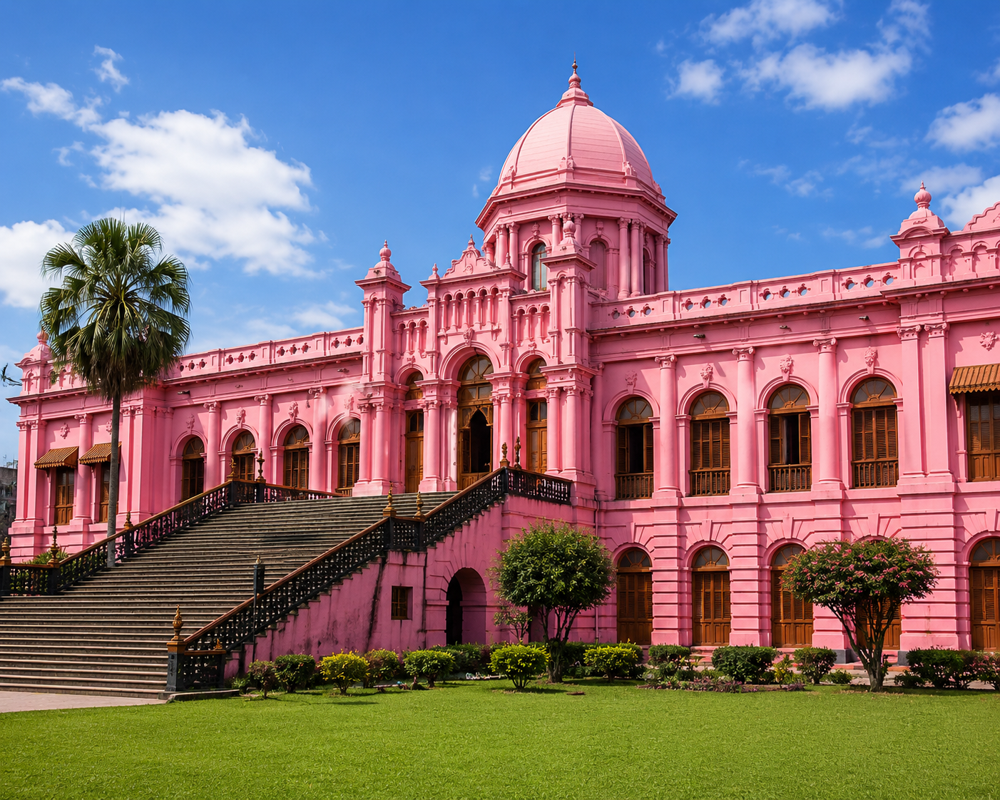
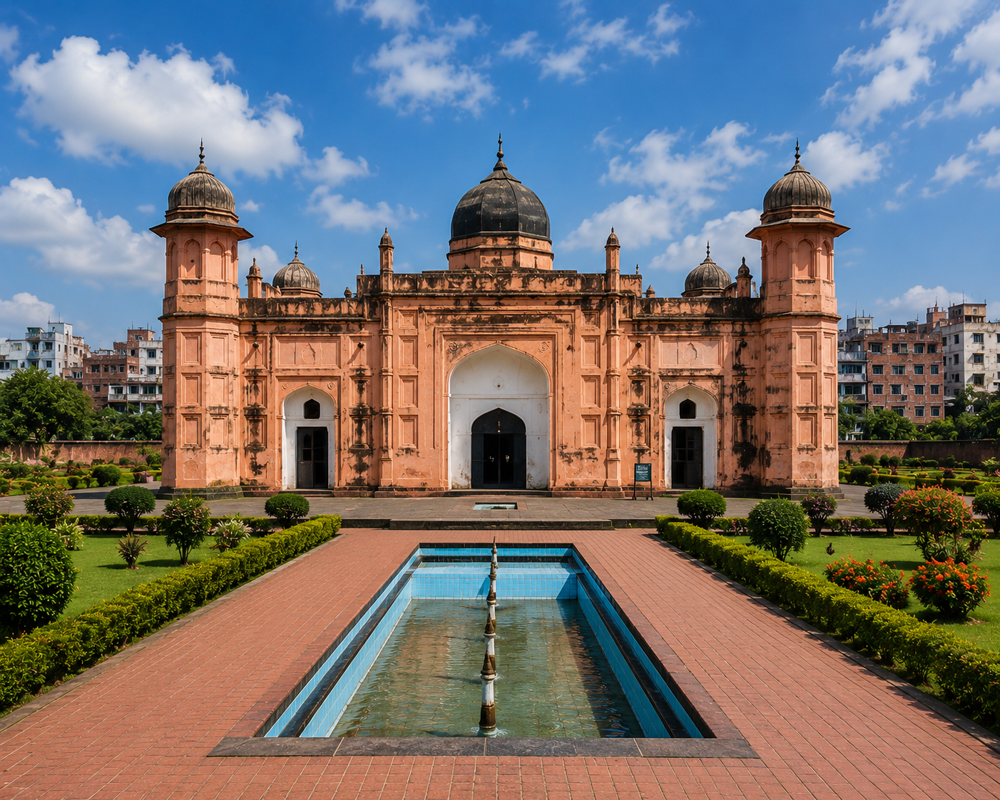
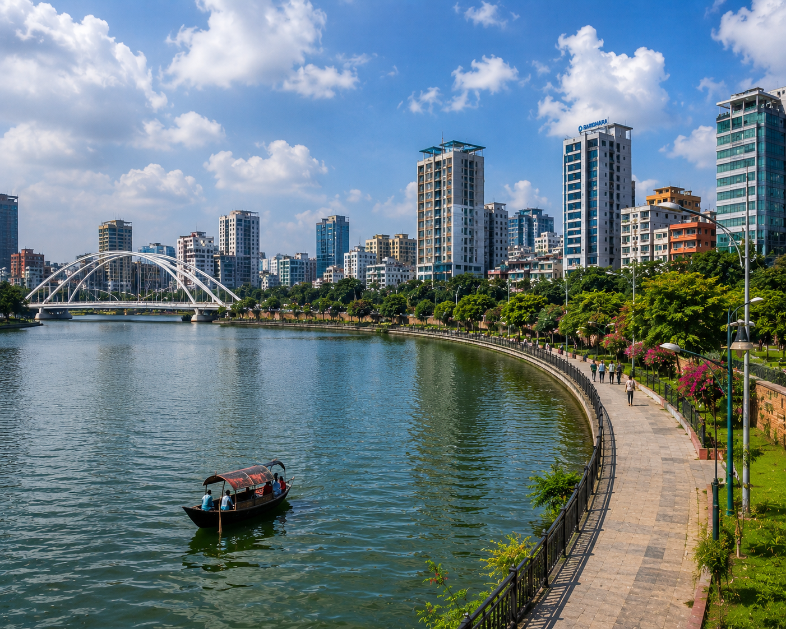
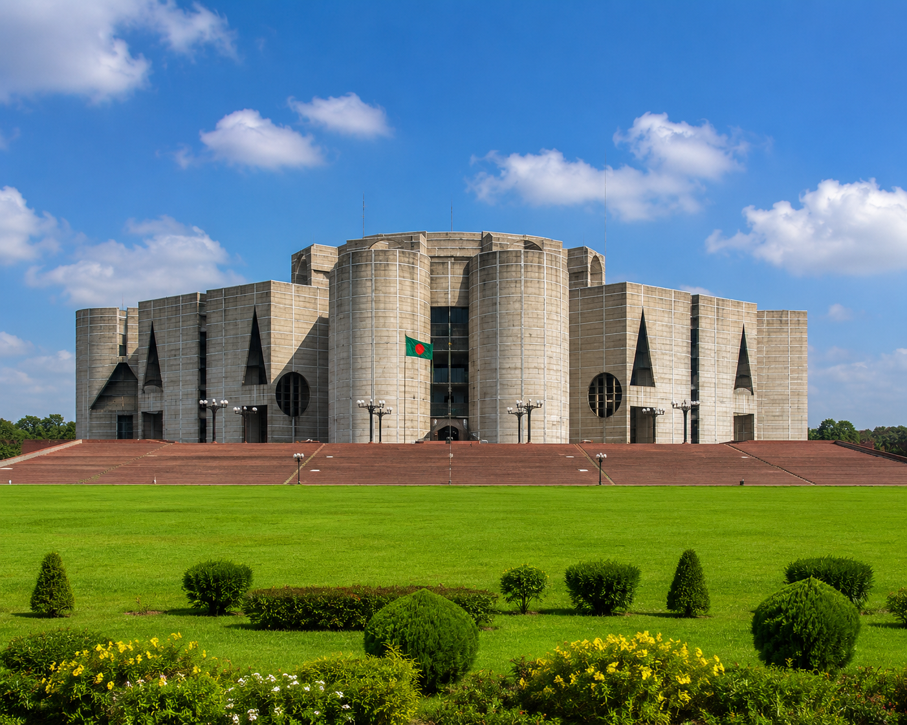
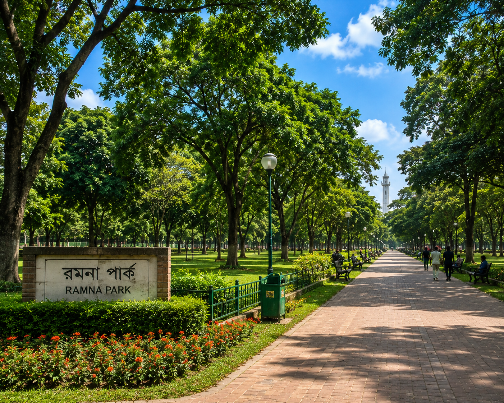
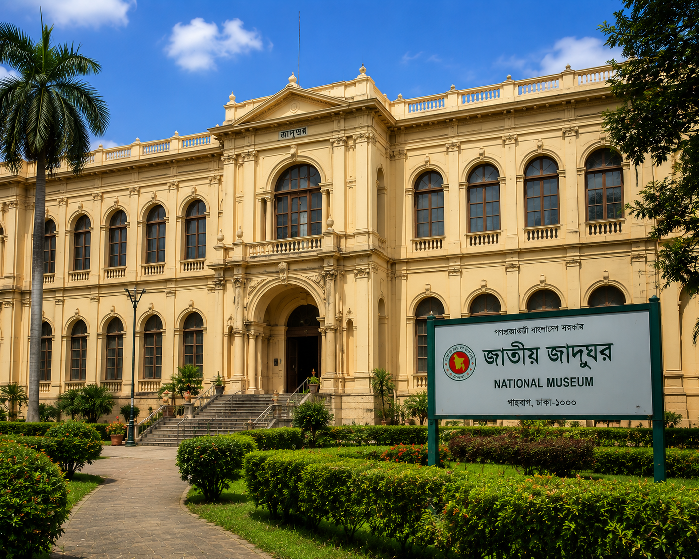

アーサン・マンジルは、バングラデシュの首都ダッカにある有名な歴史的建造物です。かつてダッカのナワーブ家の宮殿として使われていました。美しいピンク色の建物が特徴で、現在は博物館として公開されています。バングラデシュの歴史と文化を学べる人気の観光スポットです。

ラールバーグ・フォートは、バングラデシュの首都ダッカにある有名な歴史的な城塞です。1678年にムガル帝国時代に建設が始まりましたが、完成しませんでした。美しい庭園や歴史的な建物が特徴で、バングラデシュの歴史と文化を感じることができる人気の観光スポットです。

ハティルジールは、バングラデシュの首都ダッカにある人気の観光スポットです。美しい湖や橋、遊歩道があり、散歩や写真撮影を楽しむことができます。特に夜は橋や周辺の建物がライトアップされ、美しい夜景が広がります。家族や友達とリラックスした時間を過ごせる魅力的な場所です。

バングラデシュ国会議事堂は、首都ダッカにある有名な建築物です。世界的に有名な建築家ルイス・カーンによって設計され、1982年に完成しました。独特な幾何学的デザインと美しい湖に囲まれた景観が特徴です。バングラデシュの民主主義を象徴する建物で、人気の観光スポットとしても知られています。

ラムナ公園は、バングラデシュの首都ダッカにある有名な美しい公園です。広い緑地や大きな木々、美しい湖があり、自然を楽しむことができます。散歩や運動、リラックスするのに最適な場所です。都会の忙しい生活から離れて、家族や友達と穏やかな時間を過ごせる人気のスポットです。

バングラデシュ国立博物館は、首都ダッカのシャーバッグにある有名な博物館です。館内には、古代の彫刻、歴史的な遺物、伝統的な衣装、美術品などが展示されています。バングラデシュの豊かな歴史や文化、独立の歴史について学ぶことができます。歴史や芸術に興味がある人におすすめの観光スポットです。